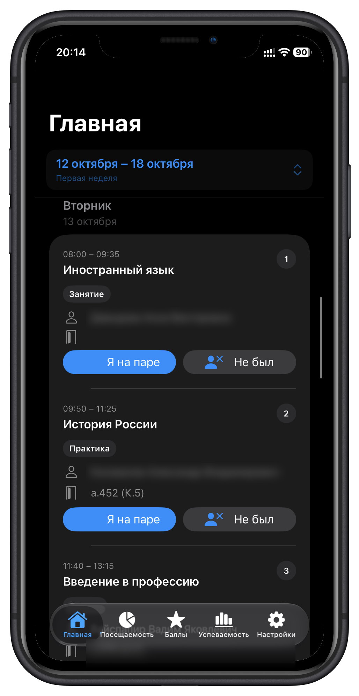
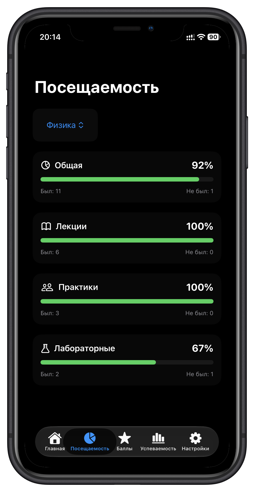
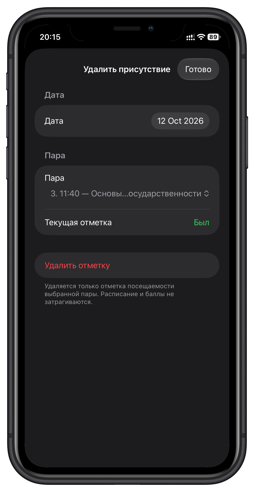
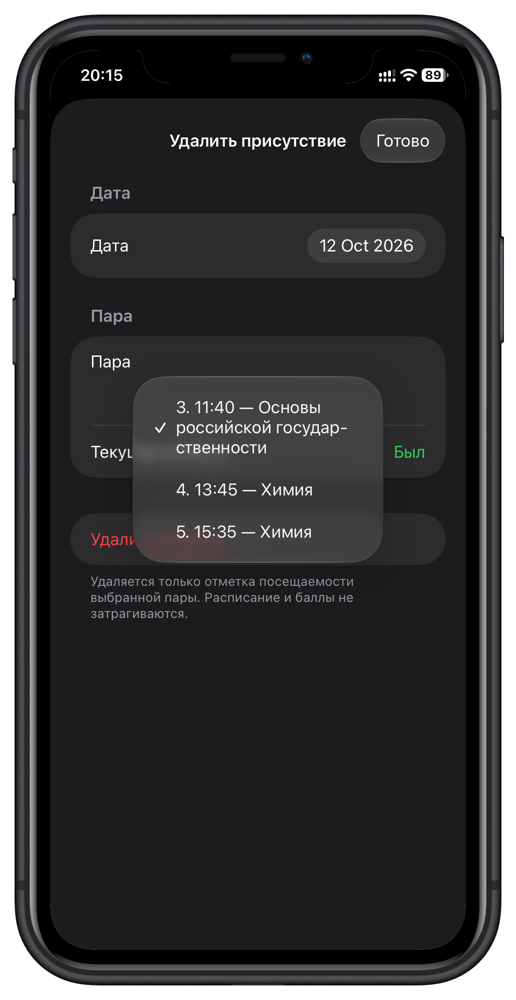
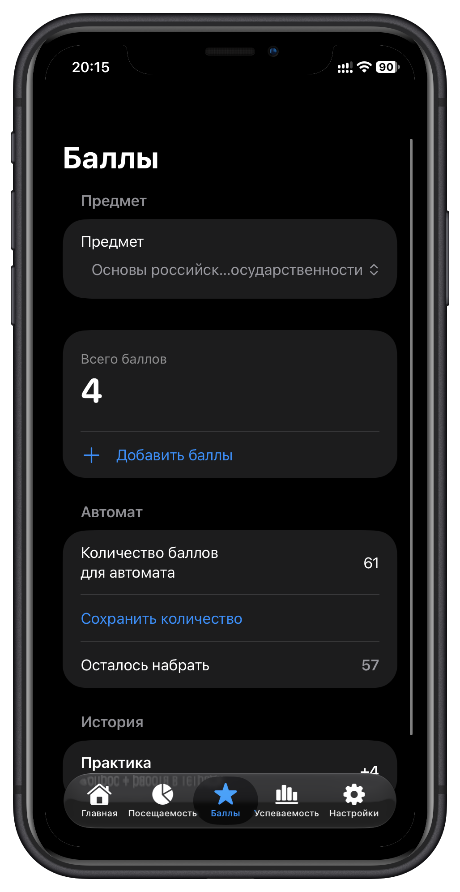
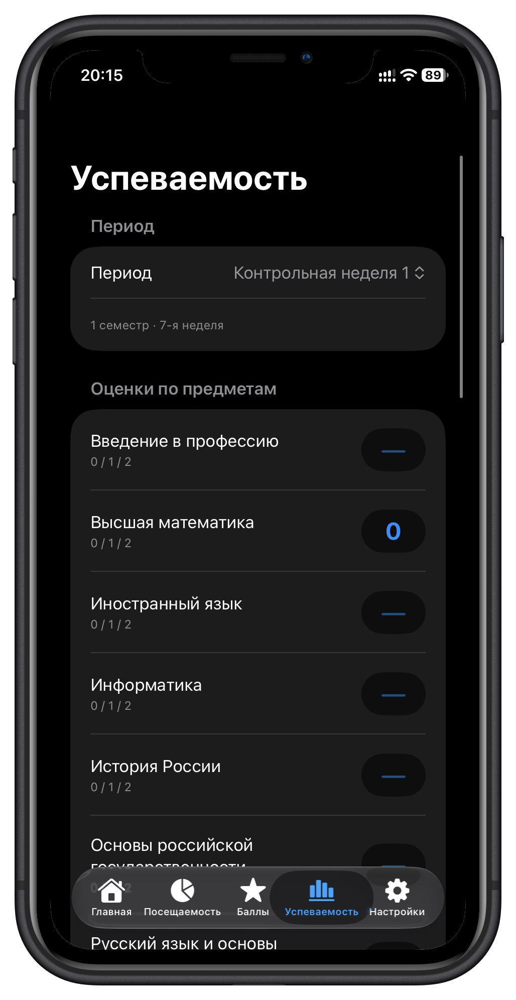
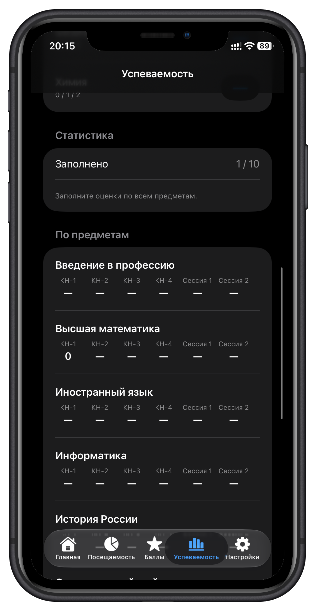
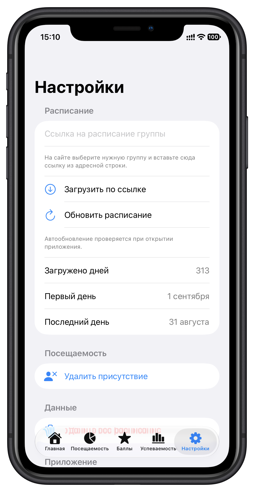
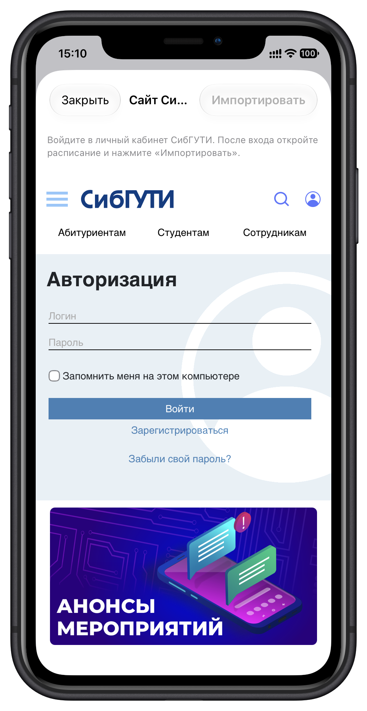

UNIVERSITY STATS · iOS
Твой учебный год
Без лишнего шума
Нативное iOS-приложение, которое помогает видеть расписание, фиксировать посещаемость и держать учебные результаты под рукой.
01 · РАСПИСАНИЕ
Неделя становится проще
Просматривай занятия по дням, времени и типу пары. Отмечай присутствие или пропуск прямо в карточке и запускай таймер: 45 минут до перерыва, 5 минут перерыва и ещё 45 минут до конца пары.

02 · ПОСЕЩАЕМОСТЬ
Отслеживай процент посещаемости
Редактируй отметку «был / не был» для конкретной пары и даты. Так можно исправить ошибку, а статистика посещаемости останется актуальной.



03 · БАЛЛЫ
Баллы и история изменений
Добавляй баллы по предметам, веди историю и задавай целевое количество для автомата. Отдельный экран показывает оценки по контрольным неделям и сессиям.

04 · УСПЕВАЕМОСТЬ
Оценки по контрольным и сессиям
Смотри результаты по каждому предмету в разрезе контрольных недель и сессий. Отдельная сводка показывает, насколько заполнены оценки.


05 · ИМПОРТ
Добавь расписание за пару шагов
Вставь ссылку на страницу расписания университета — приложение загрузит расписание прямо из интернета. Несколько дней объединяются в одно расписание.


06 · НАСТРОЙКИ
Данные под контролем
Обновляй расписание по ссылке, удаляй отдельную отметку посещаемости или очищай расписание целиком — нужные действия собраны в одном месте.
ВЕРСИИ ПРИЛОЖЕНИЯ